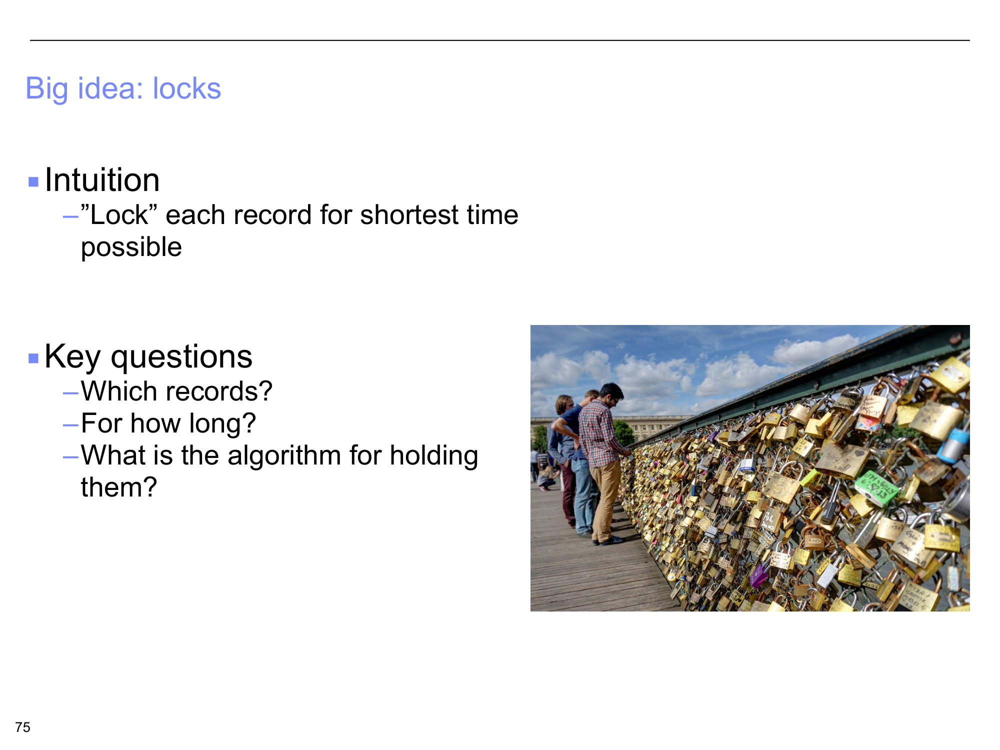
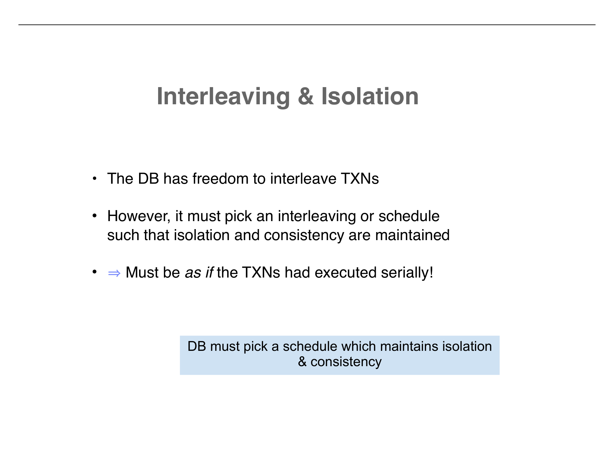

Concurrent Transactions and Scheduling
From locks to interleavings — why some schedules are safe and others are not
1. Motivation: Why Concurrent Transactions?
In Part 7, we saw how WAL provides atomicity and durability. But we left a major problem unsolved: while the monthly interest transaction T-Monthly-423 runs for 24 hours across 10 million accounts, other customers need to use the bank. Account 3001 wants to withdraw $600 at 10:02 AM. Account 5002 receives a $1,000 wire at 11:45 AM. Account 3001 makes a $12.37 debit card purchase at 2:02 PM.
Q: How do I not wait for a day to access my money?
If we run T-Monthly-423 as a serial transaction that blocks all other access, every customer is locked out for 24 hours. This is completely unacceptable. We need to allow other transactions to run concurrently with the long-running interest calculation — accessing the same accounts, reading and writing balances — without corrupting the data.
The Big Idea: Locks
The intuition is straightforward: lock each record for the shortest time possible. When a transaction needs to read or write a record, it acquires a lock on that record. Other transactions that need the same record must wait until the lock is released.
But this raises several key questions that the rest of the lecture will address:
- Which records should be locked? (Just the ones being accessed? Entire tables?)
- For how long should locks be held? (Just during the operation? Until commit?)
- What is the algorithm for acquiring and releasing locks? (This is where 2-Phase Locking comes in, covered in later parts.)

2. Concurrency: Isolation and Consistency
The database is responsible for managing concurrency so that two of the ACID properties are maintained:
Isolation (the I in ACID)
Users must be able to execute each transaction as if they were the only user. Even though hundreds of transactions are running concurrently, each one should see a consistent view of the data, unaffected by the intermediate states of other transactions.
Consistency (the C in ACID)
Transactions must leave the database in a consistent state. If every individual transaction preserves integrity constraints when run alone, then the concurrent execution must also preserve those constraints.
3. The Running Example: Transfer and Interest
The lecture introduces a concrete example that will be used throughout the remaining parts. Two transactions operate on the same two accounts:
T1: Transfer $100 from B to A
START TRANSACTION
UPDATE Accounts SET Amt = Amt + 100 WHERE Name = 'A'
UPDATE Accounts SET Amt = Amt - 100 WHERE Name = 'B'
COMMIT
T2: Apply 6% Interest to A and B
START TRANSACTION
UPDATE Accounts SET Amt = Amt * 1.06
COMMIT
In shorthand notation:
Simplified Operations
T1: A += 100, B -= 100 (transfer $100 from B's account to A's account)
T2: A *= 1.06, B *= 1.06 (credit both accounts with 6% interest)
Two important notes from the lecture:
- The database does not care whether T1 executes before T2 or T2 before T1. Both serial orderings are valid.
- If the developer cares about the order, they should combine T1 and T2 into a single transaction. Separate transactions have no ordering guarantee.
4. Serial Execution — The Baseline
Before exploring interleaving, let us establish what serial execution looks like. With A = $50 and B = $200 initially:
Serial Order: T1 then T2
T1 runs completely: A = $50 + $100 = $150, B = $200 - $100 = $100
Then T2 runs: A = $150 * 1.06 = $159, B = $100 * 1.06 = $106
Total = $265
Serial Order: T2 then T1
T2 runs completely: A = $50 * 1.06 = $53, B = $200 * 1.06 = $212
Then T1 runs: A = $53 + $100 = $153, B = $212 - $100 = $112
Total = $265
Both serial orders produce a total of $265 (the total is preserved because T1 is a transfer and T2 is a percentage). The individual values of A and B differ depending on the order — $159/$106 vs. $153/$112 — but both are correct. The database is free to pick either ordering.

5. Interleaved Execution — Good and Bad
The database can also interleave the transactions — executing some operations from T1, then some from T2, then back to T1. The goal of scheduling is to interleave transactions to boost performance while keeping the data in a good state after commits and/or aborts.
Interleaved Schedule A (Good)
Timeline: T2(A *= 1.06), T1(A += 100), T2(B *= 1.06), T1(B -= 100)
Starting: A = $50, B = $200
T2 does A *= 1.06: A = $53
T1 does A += 100: A = $153
T2 does B *= 1.06: B = $212
T1 does B -= 100: B = $112
Final: A = $159, B = $106. This matches the serial order T1→T2. Same result!
Interleaved Schedule B (Bad)
Timeline: T2(A *= 1.06), T1(A += 100), T2(B *= 1.06), T1(B -= 100)
But with a slightly different interleaving of T1's operations:
Starting: A = $50, B = $200
T1 does A += 100: A = $150
T2 does A *= 1.06: A = $159
T2 does B *= 1.06: B = $212
T1 does B -= 100: B = $112
Final: A = $159, B = $112. Total = $271. This does NOT match T1→T2 ($265) or T2→T1 ($265). Different result than serial! $6 has appeared from nowhere.

Interleaving and Isolation
The database has freedom to interleave transactions — this is essential for performance. However, it must pick an interleaving or schedule such that isolation and consistency are maintained.
The result must be as if the transactions had executed serially. The DB must pick a schedule which maintains isolation and consistency. This is exactly the serializability requirement — and checking it is what conflict graphs (covered in Part 4) are for.
Summary
- ✓ Long-running transactions cannot block everyone — the monthly interest transaction takes 24 hours, but customers need to access their accounts during that time. Concurrent execution is not optional.
- ✓ Locks are the big idea — lock each record for the shortest time possible. Key questions: which records, for how long, and what algorithm?
- ✓ Concurrency must preserve Isolation and Consistency — each user should see the database as if they were the only user, and integrity constraints must always hold.
- ✓ The DB does not care about transaction order — both T1→T2 and T2→T1 are valid serial orderings. If the developer needs a specific order, they should combine operations into one transaction.
- ✓ Serial execution is always correct but slow — both serial orderings of the bank example produce valid results ($265 total).
- ✓ Interleaving can be good or bad — Schedule A produces the same result as a serial execution (serializable). Schedule B produces a result that matches no serial order (not serializable, $6 created from nothing).
- ✓ The scheduler's job is to allow as much interleaving as possible for performance while guaranteeing that every schedule is equivalent to some serial execution. This sets the stage for conflict serializability (Part 4) and locking protocols (later parts).